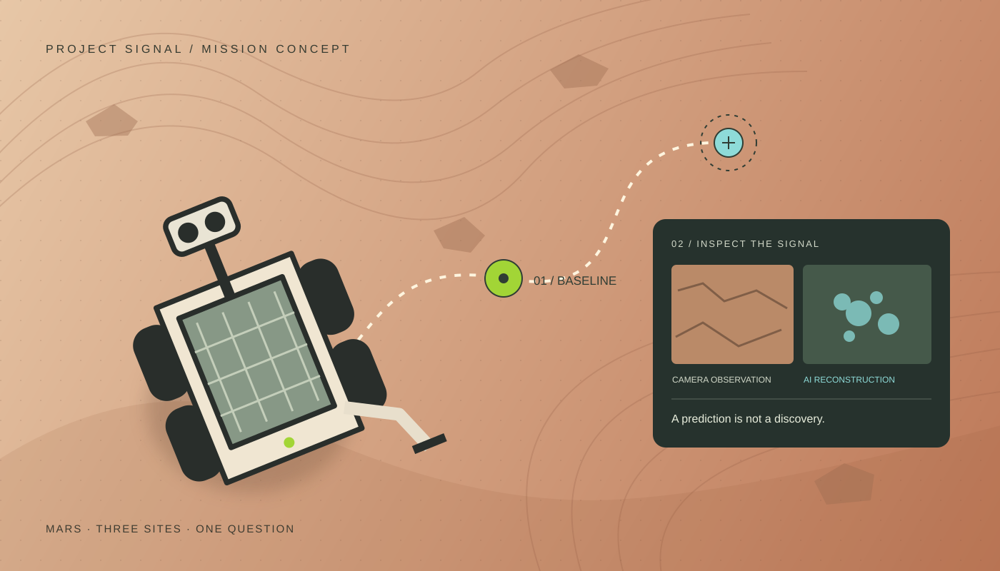
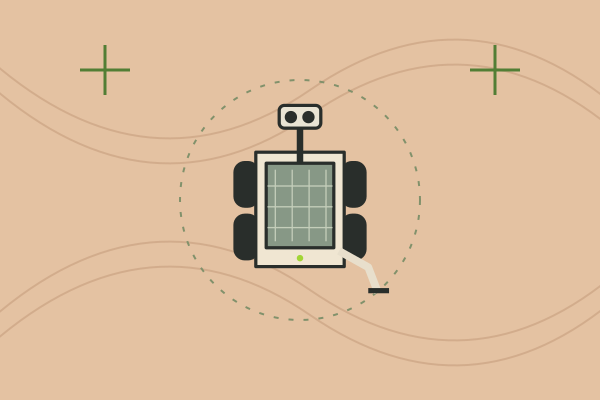
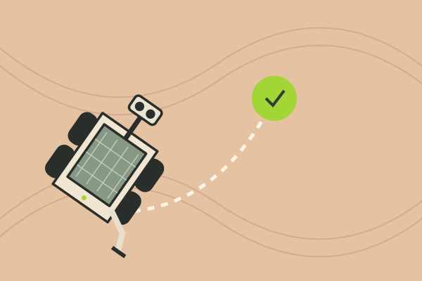
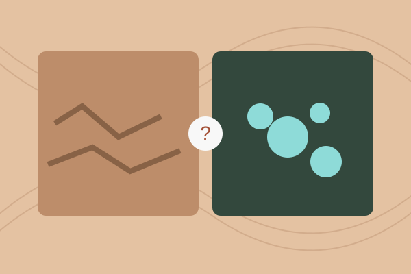
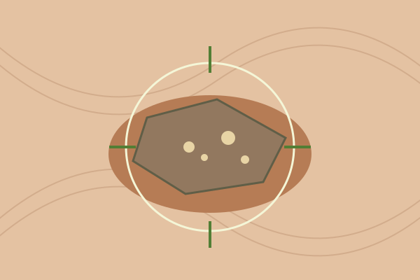

Find the evidence. Question the signal. A rover searching for life, and an AI that starts seeing what it hopes to find.

Original concept illustration · The gap between an observation and a prediction.Jaswenth Sivaraman · 2026
Theme
Hallucination
Format
2D browser game
Target session
3–5 minutes
My role
Concept & game design
01 /
A mission to find life. A reason to look twice.
Guide a Mars rover through three sampling sites. Decide what is worth collecting—and what the evidence actually says.
Project Signal follows a fictional mission investigating possible microbial life on Mars. As the remote operator, you select waypoints, inspect the rover’s readings, and send findings to Earth.
Damaged sensor data leaves gaps. The onboard AI fills them with convincing predictions, sometimes turning an ordinary surface into an apparent discovery. Your task is to compare, investigate, and report uncertainty.
Curiosity→Confidence→Doubt→Careful investigation
02 /
Two references. One focused experience.
Primary browser-game case study
We Become What We Behold
Nicky Case · HTML5 · Mouse input
I will study how selecting a moment changes its meaning, and how repeated actions develop a short narrative.
For Project Signal: explore how inspection choices reveal the difference between evidence and interpretation.
NASA describes searching deposits that could preserve signs of ancient microbial life, and storing samples for possible future return. Context matters alongside the sample.
A potential biosignature can have biological or non-biological explanations. A measured feature and a conclusion about life belong in separate parts of the report.
Evidence: does the analysis attribute an intention to the game’s creator without a source?
Interaction and sensation: does it miss a response, silence, delay, or visual change that alters the meaning of an action?
These are questions to investigate, not two gaps already found. After playing, I will challenge the analysis with my observations, save a short selected exchange, and write my own conclusion.
04 /
When prediction becomes perception.
The rover starts seeing the Mars the mission hopes to find.
A machine’s hallucination
Interference leaves gaps in the sensor feed. The rover’s AI reconstructs missing detail from learned patterns, presenting a plausible prediction as a direct observation.
A mineral texture resembles a colony. An enhanced image suggests moisture. A confident label makes an incomplete reading feel conclusive.
This is a fictional machine-perception failure. The proposal does not claim real Mars rovers behave this way.
The worldA small ancient Martian basin with three investigation sites.
The playerA remote operator choosing routes, comparing readings, and keeping a sample log.
The missionCollect soil and sediment to investigate possible microbial life. Transmit data to Earth; store physical samples for later retrieval.
The tensionQuestion the AI’s certainty while staying open to a genuinely useful finding.
05 /
A small journey. A changing understanding.
Select waypoint→Travel→Inspect→Collect or skip→Record

Opening / Establish contact
Meet the mission.
Connect to the rover and learn what you are looking for.
Input
Activate “Establish contact.”
Feedback → continue
The console opens and highlights the first waypoint.

Stage 01 / Baseline
Learn to trust.
Visit a clear site where camera and scanner agree.
Input
Select the waypoint, inspect, and collect.
Feedback → continue
The reference sample enters the log; the next route opens.

Stage 02 / The promising signal
Notice the mismatch.
The enhanced view suggests more than the readings support.
Input
Open the raw view and compare the scanner.
Feedback → continue
Discover the disagreement. Skip, or collect with an uncertainty note.

Stage 03 / An uncertain discovery
Stay curious.
A real unusual feature deserves investigation, even if its origin is unknown.
Input
Compare the evidence and decide whether to sample.
Feedback → continue
Record the observation separately from the biological interpretation.
Ending / Signal home
Send what you know.
Review all three sites, correct unsupported claims, and transmit the report.
Input
Review conclusions and choose “Transmit.”
Feedback → continue
An evidence summary shows samples and uncertainty, with options to revise or replay.
The decision flow
One main interaction, repeated with more demanding evidence.
ConnectOpening
Choose waypointTravel to a site
Inspect & compareCamera · scanner · AI
Collect or skipRecord evidence + uncertainty
Review & transmitAfter three sites
↳ After each site, return to waypoint selection until all three are reviewed. At the ending, revise the report or replay.
06 /
Quiet terrain. An uneasy signal.
Mars rust#A34F35
Sediment#E9D6BD
Paper#F8F8F8
Console#242C29
Signal#8EDBD8
Type & interface
Look closer.
CAMERA / SCANNER / INTERPRETATION
Funnel Display connects the proposal to my portfolio. Restrained monospaced labels distinguish readings. A compact map, inspection panel, and sample log keep sources visible.
Image & composition
Simple top-down terrain and a readable rover silhouette give navigation room to breathe. Inspection close-ups carry the detail. JPL’s navigation documentation informs how routes and hazards can be communicated.
Short rover travel and a scan sweep confirm actions. A subtle shift or doubled edge suggests unstable reconstruction. Labels and shapes accompany color; reduced-motion settings will be respected.
Beach Buggy Racing is the starting point for studying movement feedback; observations still need documenting.
Sound & silence
Optional low ambience, wheel and scan cues, and brief radio interference support the mission. Silence can mark a contradiction. Sound will require an explicit start action and a persistent mute control.
Audio references and licensed assets are still to be selected. This direction describes designed sound, not an authentic Mars recording.
07 /
Build small. Test what players understand.
Week 02
Make the mission playable.
Build one complete site: select a waypoint, travel, inspect, sample, and record.
Extend the loop across three stages with distinct evidence and feedback.
Add the opening, report review, ending, and replay.
Integrate first art and sound, with touch and keyboard controls.
Publish a prototype and check a complete run.
Week 03
Observe. Refine. Publish.
Invite players to try it, aiming for three testers. Observe before explaining.
Check waypoint clarity, the first contradiction, and the meaning of the report.
Test wide and phone screens, keyboard, muted audio, and reduced motion.
Refine instructions, touch targets, pacing, and feedback using actual findings.
Publish and verify the full game, assets, links, and restart behavior.
One small mapThree investigation sitesOne sample logOne report systemAuthored hallucinations